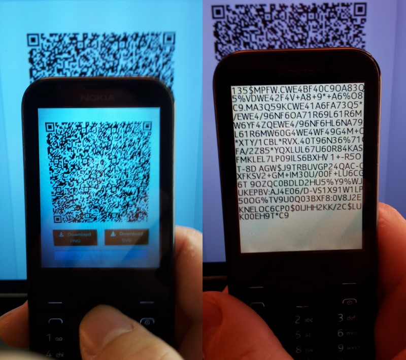

Basic app to scann QR code for MRE platform mobile phone (including Nokia S30+). Tested on Nokia 225 with display resolution 240x320. If exist text file "e:\Qrsp.txt" all scanned QR texts saved on single text file, if not, in different autonamed files each (changing app name change default text file name). LEFT_SOFTKEY - next scann, RIGHT_SOFTKEY - exit app, KEY_DOWN - next page, KEY_UP - previous page. For using with Nokia mobile phone, app must be signed with IMSI (your SIM card) code. https://vxpatch.luxferre.top. Application file - "Qrsp.vxp". (For low memory phone: Qrsp_850KB.vxp").
